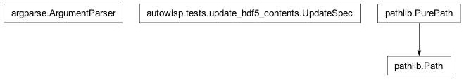

autowisp.tests.update_hdf5_contents module
Class Inheritance Diagram

Bring HDF5 files in one directory closer to matching files in another.
- Usage:
python update_hdf5_contents.py source_dir dest_dir spec_file [options]
The spec file lists items to apply, one per line. Each line starts with +
to copy from source to destination or - to delete from destination:
# comments and blank lines are ignored + dataset /Group/Subgroup/DatasetName - dataset /Group/StaleDataset + attribute /Group/Subgroup AttributeName - attribute /Group/Subgroup StaleAttribute
The - form only touches the destination; source_dir is not consulted.
Operations are applied in spec-file order, so a - followed by a + for
the same path replaces it cleanly even with --on-conflict=error.
Path and attribute-name tokens are interpreted as Python re regular
expressions, anchored end-to-end (i.e. matched with re.fullmatch()).
For + operations the regexes are resolved against the source file; for
- operations they are resolved against the destination file. A line that
matches zero items is treated like a missing source / destination (governed
by --missing-source / --missing-dest). Note that HDF5 paths starting
with a literal . will be matched by the regex metacharacter .; escape
special characters with \ if a strict literal match is required.
- class autowisp.tests.update_hdf5_contents.UpdateSpec[source]
Bases:
objectParsed ordered list of HDF5 operations (copy and/or delete).
- classmethod from_file(spec_path)[source]
Parse
spec_pathand return the populatedUpdateSpec.Each non-blank, non-comment line must be either
<action> dataset <hdf5_path>or<action> attribute <hdf5_path> <attr_name>, where<action>is+(copy from source) or-(delete from destination). RaisesValueErroron malformed lines.
- autowisp.tests.update_hdf5_contents._all_dataset_paths(h5_root)[source]
Return every dataset path in
h5_root(absolute,/...).
- autowisp.tests.update_hdf5_contents._all_object_paths(h5_root)[source]
Return every object path in
h5_root(groups + datasets) and/.
- autowisp.tests.update_hdf5_contents._apply_operations(spec, src, dst, args)[source]
Apply every operation in
specto the (src,dst) pair.The path / attribute-name tokens in each op are treated as Python regular expressions and resolved against
srcfor+ops anddstfor-ops. If a regex matches zero items,--missing-source/--missing-destcontrols whether that is an error or a warning.
- autowisp.tests.update_hdf5_contents._copy_attribute(src, dst, obj_path, attr_name, *, on_conflict='error', missing_source='error', dry_run=False)[source]
Copy an attribute
attr_nameonobj_pathfromsrctodst.Semantics for
on_conflict,missing_source, anddry_runmatch_copy_dataset(). The destination object is created as a group if it does not yet exist.
- autowisp.tests.update_hdf5_contents._copy_dataset(src, dst, dataset_path, *, on_conflict='error', missing_source='error', dry_run=False)[source]
Copy a single dataset from
srctodst.on_conflict('skip'/'overwrite'/'error') controls behavior whendataset_pathalready exists indst;missing_source('skip'/'error') controls behavior when it is absent fromsrc. Ifdry_runis true, log the intended action without modifyingdst. Missing parent groups in the destination are created on demand.
- autowisp.tests.update_hdf5_contents._delete_attribute(dst, obj_path, attr_name, *, missing_dest='skip', dry_run=False)[source]
Delete attribute
attr_nameonobj_pathindst.Semantics for
missing_destanddry_runmatch_delete_dataset().
- autowisp.tests.update_hdf5_contents._delete_dataset(dst, dataset_path, *, missing_dest='skip', dry_run=False)[source]
Delete
dataset_pathfromdst.missing_dest('skip'/'error') controls behavior when the dataset is absent. Ifdry_runis true, log the intended action without modifyingdst.
- autowisp.tests.update_hdf5_contents._report_empty_match(label, missing_policy)[source]
Raise or warn that a regex matched zero items, per
missing_policy.
- autowisp.tests.update_hdf5_contents._resolve_attribute_targets(h5_root, obj_pattern, attr_pattern)[source]
Return
(obj_path, attr_name)pairs inh5_rootmatching regexes.Both patterns are matched with
re.fullmatch().
- autowisp.tests.update_hdf5_contents._resolve_dataset_paths(h5_root, pattern)[source]
Return
(dataset_path,)tuples inh5_rootmatching the regex.Tuples (rather than bare strings) are returned so callers can unpack the result uniformly with the
(obj_path, attr_name)pairs returned by_resolve_attribute_targets(). Matching usesre.fullmatch().
- autowisp.tests.update_hdf5_contents.main()[source]
Entry point: apply the spec-listed operations to matching HDF5 files.
Pairs files in
source_dirwith same-named files indest_dir(via--pattern), then applies every operation in the spec – in file order – to each pair.+lines copy from source to destination;-lines delete from destination only. Errors are collected and reported at the end; the process exits non-zero if any pair failed.